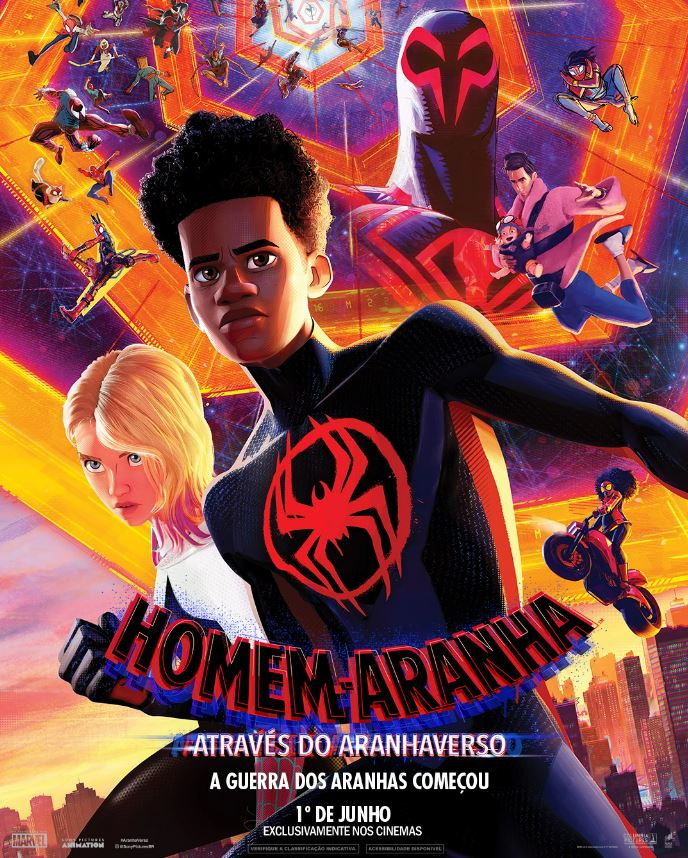
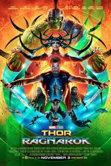

FILMES
Homem-Aranha: Através do Aranhaverso, é a continuação do vencedor do Oscar Homem-Aranha: No Aranhaverso, de 2018, que acompanha Miles Morales (Shameik Moore), o simpático Homem-Aranha do Brooklyn. Neste novo capítulo, Miles está de volta para uma nova missão em sua agitada vida como super herói. No novo filme, Morales é transportado para uma aventura épica através do multiverso, e deve unir forças com a mulher-aranha Gwen Stacy (Hailee Steinfeld) e um novo time de Pessoas-Aranha, formado por heróis de diversas dimensões. No entanto, tudo muda quando os heróis entram em conflito sobre como lidar com uma nova ameaça, e Miles se vê em um impasse. E para piorar ainda mais a situação, eles precisam enfrentar um vilão muito mais poderoso do que qualquer coisa que já tenham encontrado antes. Agora, para salvar as pessoas que ele mais ama no mundo, Miles deve redefinir o que significa ser um super herói.

Em um mundo ciente da existência do Homem de Ferro, o inventor bilionário Tony Stark sofre pressão de todos os lados para compartilhar sua tecnologia com as forças armadas. Ele resiste para divulgar os segredos de sua inigualável armadura, com medo de que estas informações caiam nas mãos erradas. Com a bela Pepper Potts e o amigo "Rhodey" Rhodes ao seu lado, Tony precisa forjar novas alianças e confrontar um inimigo poderoso.

Após anos afastado, Thor retorna para casa e descobre que seu pai, Odin, rei de Asgard, está desaparecido. Após encontrá-lo, ele toma conhecimento de sua irmã mais velha, Hela, a poderosa e implacável deusa da morte. Com o auxílio de Loki, ele enfrenta Hela, mas durante a batalha, Thor acaba preso em Sakaar, um planeta do outro lado do universo. Agora, ele precisa correr contra o tempo para voltar a Asgard e impedir o Ragnarok, a destruição de seu mundo.